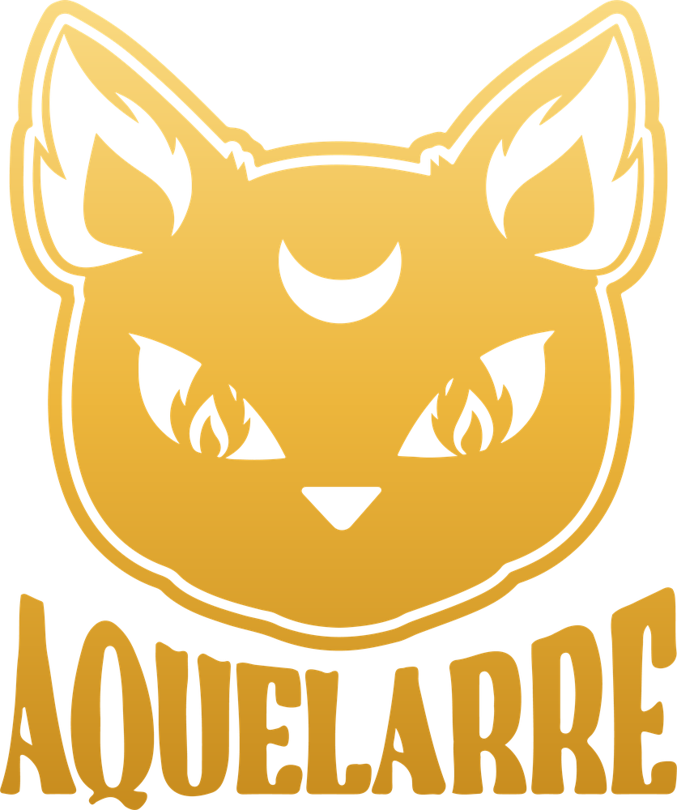

Comunidad gamer femenina
Próximamente
El aquelarre se está preparando. Muy pronto vas a encontrar aquí nuestros eventos, torneos y todo lo que hacemos por más mujeres en el gaming.
Síguenos en @aql.teamHasta la próxima luna llena

Comunidad gamer femenina
El aquelarre se está preparando. Muy pronto vas a encontrar aquí nuestros eventos, torneos y todo lo que hacemos por más mujeres en el gaming.
Síguenos en @aql.teamHasta la próxima luna llena